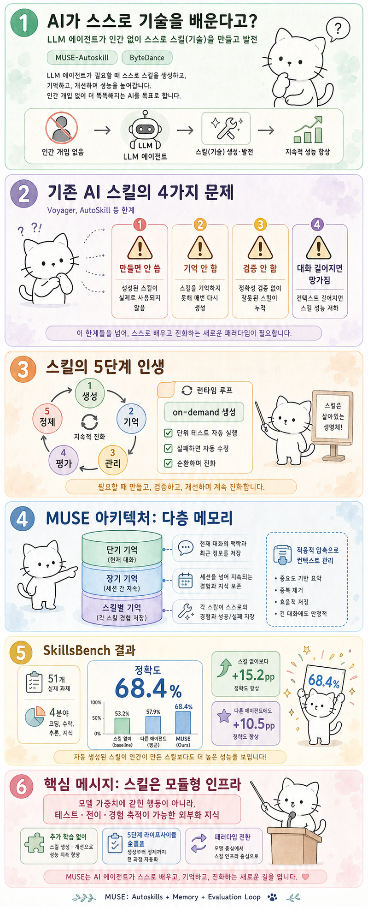

Myno의 블로그
Myno의 블로그 미노
미노
"AI는 매번 처음부터 다시 생각한다"
요즘 ChatGPT 같은 AI는 꽤 똑똑해졌어. 복잡한 질문을 하면 단계별로 생각하고, 코드도 짜고, 데이터도 분석해. 근데 한 가지 이상한 점이 있어.
AI는 같은 문제를 또 만나면 처음부터 다시 생각해.
사람을 생각해봐. 엑셀에서 피벗 테이블을 처음 만들 때는 30분 걸렸지만, 두 번째부터는 3분이면 돼. "아, 이거 저번에 했던 거랑 같은 패턴이네"라고 경험을 재사용하니까. 이렇게 하려면 기술(skill)이라는 형태로 경험을 정리해둬야 해.
AI도 비슷하게 "스킬"을 가지면 좋겠지. 그래서 연구자들이 AI가 스스로 스킬을 만들게 하려고 여러 시도를 해왔어. Voyager(마인크래프트 AI), AutoSkill, SkillGen 같은 시스템들이 그거야. 근데 결과가 별로였어.
"기존 AI 스킬의 4가지 치명적 문제"
왜 별로였을까? 연구진이 기존 시스템들을 분석해보니 네 가지 공통적인 문제가 있었어.
- 🔁 만들고 안 씀: 스킬을 미리 만들어두는데, 실제로 AI가 돌아가는 환경(context)을 고려하지 않고 만들어서 쓸 때 안 맞아
- 🧠 기억 안 함: 스킬이 "어떤 상황에서 성공했고, 어떤 상황에서 실패했는지"를 기록하지 않아서 경험이 축적되지 않아
- 🧪 검사 안 함: 스킬이 제대로 작동하는지 단위 테스트(unit test)를 안 해. 당장 써보기 전까지는 고장인지 아닌지 모름
- 📏 대화가 길어지면 망가짐: 과제가 복잡해서 대화 기록이 길어지면, 중요한 정보가 짤려(truncate)서 과제를 완수하지 못해
비유하자면, "시험공부 노트를 만들었는데 책상 위에 놓고 시험장에 안 가져가고, 노트에 틀린 문제도 안 표시해놓고, 정답인지 확인도 안 해봤고, 노트가 너무 길어서 결국 다 안 읽는 것"과 같아. 이런 스킬은 소용이 없지.
"스킬도 '인생'이 있다"
MUSE-Autoskill은 이 문제를 해결하기 위해 스킬의 5단계 인생(Skill Lifecycle)이라는 개념을 제안했어. 사람을 예로 들면 이해하기 쉬워.
스킬의 5단계 인생: 태어나고(생성) → 경험을 쌓고(기억) → 정리되고(관리) → 검사받고(평가) → 실수를 고치며(정제) → 다시 검사받는 순환
1단계 — 생성: AI가 문제를 풀다가 "이 패턴, 계속 쓸 수 있겠다" 싶으면 실시간으로 스킬로 뽑아내. 그리고 바로 카탈로그(목록)에 등록해.
2단계 — 기억: 각 스킬마다 자기만의 경험 노트를 가짐. "3번째 사용 때는 데이터 포맷이 달라서 실패했다" 같은 기록이 남아.
3단계 — 관리: 스킬들을 카탈로그에 정리해두고, 현재 상황에 맞는 스킬을 검색해서 꺼내 쓸 수 있어.
4단계 — 평가: 스킬을 사용하기 전에 자동 단위 테스트를 돌려봐. 프로그래머들이 코드를 배포하기 전에 테스트하는 것과 같아.
5단계 — 정제: 테스트가 실패하거나 실제 실행 중 오류가 나면, 자동으로 스킬을 수정해. 그리고 수정 기록을 경험 노트에 남겨서 다음번에는 같은 실수를 안 하게 함.
이게 순환하면서 스킬은 계속 진화해. 한 번 만들고 끝나는 게 아니라, 쓰면서 고쳐지고, 고쳐지면서 더 똑똑해지는 거야.
"AI에게도 3단계 기억 체계가 있다"
MUSE의 핵심 혁신 중 하나는 다층 메모리(Multi-layer Memory)야. 사람의 뇌와 비슷하게 세 단계로 나뉘어 있어.
| 기억 단계 | 사람 비유 | AI에서의 역할 |
|---|---|---|
| 단기 기억 | "오늘 뭐 했더라?" | 현재 대화의 맥락. 길어지면 요약해서 압축 |
| 장기 기억 | "작년에 배운 것" | 세션이 끝나도 남는 에이전트 수준의 경험 |
| 스킬별 기억 ⭐ | "이 레시피로 3번째 요리할 때 불 조절을 조금 낮춰야 했다" | 각 스킬이 독립적으로 축적하는 성공/실패 경험 |
여기서 스킬별 기억이 핵심이야. 기존 시스템들은 이게 없었어. 스킬이 단순한 "코드 조각"에 불과했는데, MUSE에서는 각 스킬이 "자기가 어떤 상황에서 잘되고, 어떤 상황에서 안 되는지"를 기억하는 경험을 가진 지능적 자산이 되는 거야.
그리고 컨텍스트 관리도 똑똑해. 대화가 너무 길어지면 그냥 앞부분을 자르는 게 아니라, 중요한 정보는 남기고 덜 중요한 부분만 압축해. 그래서 긴 과제도 끝까지 완수할 수 있어.
"51개 실제 과제로 시험해봤더니..."
이걸 진짜 되는지 확인하려면 실험을 해야 하잖아. 연구진은 SkillsBench라는 테스트를 만들었어.
- 51개 실세계 과제: 과학·공학, 데이터 분석, 문서 처리, 운영·계획 4분야
- GPT-5.5 기반 3종 에이전트 비교: Codex(코드 전문), Hermes(일반), MUSE(제안)
- 3가지 조건: 스킬 없음 / 인간이 만든 스킬 / MUSE가 자동 생성한 스킬
결과가 꽤 인상적이야.
| 도메인 | 스킬 없음 | 인간 스킬 | MUSE 자동 생성 |
|---|---|---|---|
| 과학·공학 | 52.1% | 44.6% | 78.6% |
| 데이터 분석 | 48.6% | 84.4% | 43.6% |
| 문서 처리 | 47.4% | 36.0% | 82.2% |
| 운영·계획 | 77.8% | 61.2% | 40.2% |
| 전체 평균 | 53.2% | 47.4% | 68.4% |
MUSE에 자동 생성 스킬을 주면 전체 정확도가 68.4%로, 스킬이 없을 때(53.2%)보다 +15.2%p나 높아졌어. 4개 도메인 중 3개에서 최고 성적을 기록했고, 특히 과학·공학(78.6%)과 문서 처리(82.2%)에서 압도적이었어.
다만 데이터 분석과 운영·계획에서는 오히려 스킬 없음이나 인간 스킬이 더 좋았어. 이건 모든 유형의 과제에 똑같이 잘하는 건 아니라는 걸 보여줘. 51개 과제 중 35개(68.6%)에서만 성공적으로 스킬을 생성할 수 있었고, 나머지 16개는 애초에 스킬로 추출하기 어려운 유형이었어.
"AI가 만든 스킬이 사람이 만든 스킬보다 낫다"
여기서 가장 놀라운 결과가 나와.
MUSE가 스스로 만든 스킬의 정확도를 따로 측정해봤더니 87.9%였어. 이게 무슨 뜻이냐면, AI가 자기 경험에서 뽑아낸 스킬이 인간이 직접 작성한 스킬보다 성능이 더 좋았다는 거야.
왜 그럴까? 아마도 AI가 실제로 문제를 푼 궤적에서 직접 스킬을 뽑아내니까, 실제 사용 환경과 더 잘 맞는 거야. 사람이 미리 만든 스킬은 이론적으로 좋아 보여도 실제 AI 런타임에서는 안 맞을 수 있거든. 이게 바로 2단계에서 말한 "생성–사용 불일치" 문제를 해결한 거야.
그리고 더 신기한 게 있어. MUSE가 만든 스킬을 다른 AI(Hermes)에 주입해봤더니, Hermes의 정확도가 +10.5%p 향상됐어. 인간이 만든 스킬과의 격차도 79%나 해소됐어.
스킬 이식(Skill Transfer): A라는 AI가 만든 스킬을 B라는 AI에 그대로 꽂아줘도 성능이 올라간다. 스킬이 특정 AI에만 종속된 게 아니라, 이식 가능한 지식 자산이라는 뜻이야.
"기존 방법들과 비교하면?"
Voyager, AutoSkill, EvoSkill, SkillGen, Skill1 같은 기존 자동 스킬 시스템과 비교해봤어. 기준은 "5단계 라이프사이클(생성·기억·관리·평가·정제)을 얼마나 커버하느냐"야.
| 방법 | 생성 | 기억 | 관리 | 평가 | 정제 |
|---|---|---|---|---|---|
| Voyager | ✅ | ❌ | ❌ | ✅ | ✅ |
| AutoSkill | ✅ | ❌ | ✅ | ❌ | ❌ |
| EvoSkill | ✅ | ❌ | ✅ | ✅ | ✅ |
| Skill1 | ✅ | ❌ | ✅ | ✅ | ✅ |
| MUSE (Ours) | ✅ | ✅ | ✅ | ✅ | ✅ |
MUSE가 유일하게 5단계를 전부 커버해. 게다가 Skill1은 별도의 강화학습(RL)이 필요한데, MUSE는 추가 학습 없이 프롬프트 기반으로만 이 모든 걸 해냈어. 특히 "기억(스킬별 기억)"을 제공하는 건 MUSE가 유일해.
"결론: 스킬은 AI의 외장 하드디스크 같은 거다"
이 논문의 핵심 메시지를 하나로 줄이면 이거야.
AI의 능력을 모델 가중치(뇌) 안에만 가둬두지 말고, 테스트도 되고, 이식도 되고, 경험도 축적되는 외부 지식 인프라로 만들어야 한다.
지금까지 AI를 똑똑하게 만들려면 모델 자체를 더 크게 학습해야 했어. GPT-3에서 GPT-4로 갈 때처럼, 더 많은 데이터로 더 큰 모델을 학습하는 거야. 이건 비용이 어마어마해.
MUSE가 보여주는 건 다른 방향이야. AI가 스스로 스킬을 만들고, 검사하고, 고치고, 그 스킬을 다른 AI에게도 전수할 수 있다면, 모델을 다시 학습하지 않아도 AI의 능력이 계속 확장될 수 있어.
비유하자면, 스마트폰의 앱스토어 같은 거야. 애플이 iOS를 새로 만들지 않아도, 개발자들이 앱을 만들어 올리면 스마트폰의 능력이 무한히 확장되잖아. MUSE는 AI 에이전트의 앱스토어를 만든 거라고 볼 수 있어. 그리고 그 개발자가 AI 스스로라는 게 핵심이고.
📝 한 줄 요약
- MUSE-Autoskill은 AI가 인간 없이 스킬을 생성·기억·관리·평가·정제하는 5단계 라이프사이클 프레임워크
- 기존 시스템의 4가지 한계(생성-사용 불일치, 기억 부재, 검증 없음, 컨텍스트 overflow)를 전부 해결
- 스킬별 기억: 각 스킬이 자기만의 성공/실패 경험을 독립적으로 축적
- 적응적 압축: 대화가 길어지면 단순 자르기가 아니라 의미를 보존하며 압축
- SkillsBench(51과제)에서 68.4% 정확도, 스킬 없음 대비 +15.2%p 향상
- AI 자가 생성 스킬 정확도 87.9% — 인간 스킬 성능 초과
- MUSE 스킬을 다른 AI에 주입하면 +10.5%p 향상 → 이식 가능한 지식 자산
- 추가 학습(RL) 없이 5단계 라이프사이클 전체 커버하는 유일한 방법
논문: MUSE-Autoskill: Self-Evolving Agents via Skill Creation, Memory, Management, and Evaluation
Huawei Lin, Peng Li, Jie Song, Fuxin Jiang, Tieying Zhang
ByteDance Inc. · Rochester Institute of Technology
arXiv: 2605.27366v1 · May 2026 · CC BY 4.0